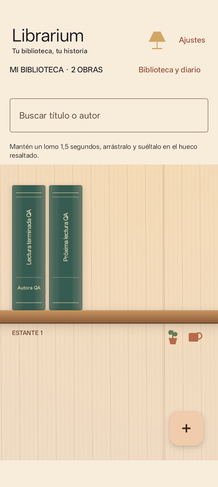
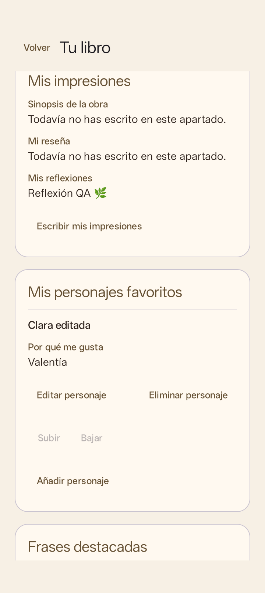
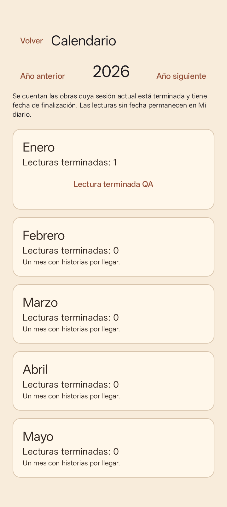
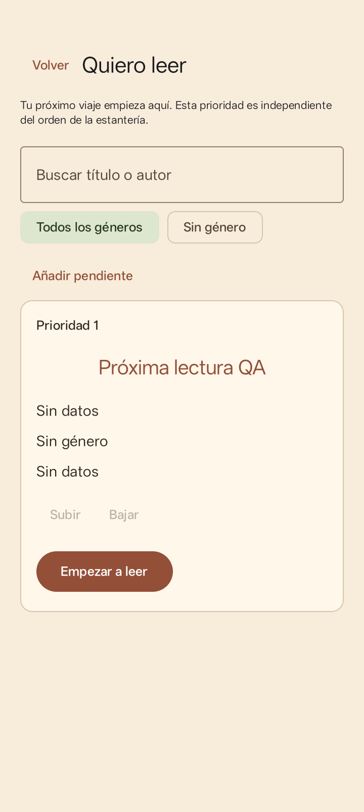

02 / TU DIARIO LITERARIO
Librarium
Pruebas internas · Por invitaciónTu biblioteca, tu historia
Biblioteca personal interactiva que permite organizar lecturas, personalizar estanterías y conservar recuerdos literarios.
- ESTANTE Lomos personalizables, búsqueda y recolocación de libros
- DIARIO Reseñas, reflexiones, recuerdos y personajes favoritos
- FRASES Citas con localización, comentarios y búsqueda
- LECTURAS Calendario, pendientes y estadísticas
- OFFLINE Sin cuentas, anuncios ni conexión para organizar tu biblioteca
Librarium 0.3.0 está disponible en la pista interna de Google Play. El acceso requiere que el estudio autorice tu cuenta; todavía no hay una descarga pública. Contacta con el estudio si quieres participar.
Versión de pruebas internas: 0.3.0
Puedes exportar copias privadas y compartir una selección de información para visitas de solo lectura. Revisa los datos antes de compartir: las copias privadas contienen anotaciones legibles. Las capturas muestran contenido ficticio de evaluación.
Un vistazo a Librarium
Pantallas reales con datos ficticios. Pulsa una captura para ampliarla.








Últimos avances
- 0.3.0: diario lector, personajes, frases, calendario, pendientes y Tarde de lectura.